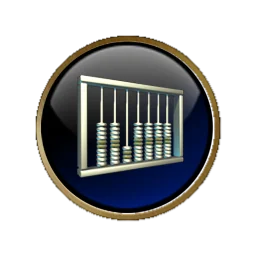
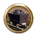
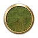
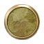

文明5在线百科
地域设施
地域设施主页
堡垒
采石场
城市废墟
道路
发掘现场
风景地标
宫堡
海关
海上平台
红木林场
锯木场
军事要塞
卡斯巴哈
矿井
猎场
蛮族营地
贸易站
摩艾石像群
牧场
农场
商站
梯田
铁路
圩田
学园
油井
渔船
远古遗迹
制造中心
种植园
宗教圣地

产出:
+8
开发资源:

可建造于:


学园
游戏信息:
“学园”是一种专门提供“高级”的中等教育（大学之前）的机构。学园分为许多种类——例如军事，宗教，政治等等。一些学园是私立的，只招收那些有钱有势或权贵家族的孩子；其他的则对所有那些满足他们严厉要求的孩子开放。建立于1440年的英国伊顿公学是世界上最著名的学园之一，那里汇集着全英格兰年龄在13至18岁之间的、最聪明的男孩。